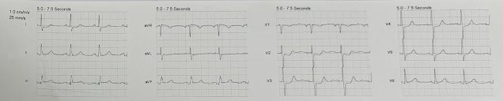
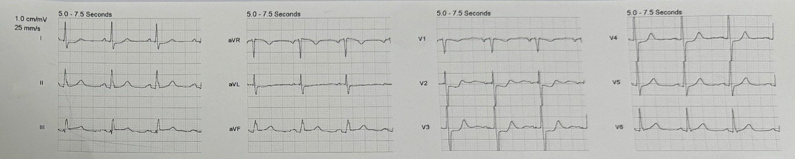
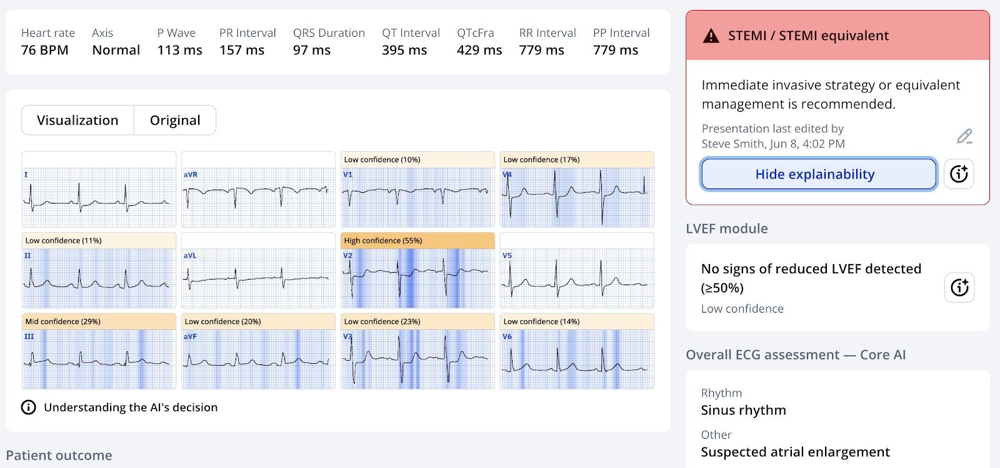
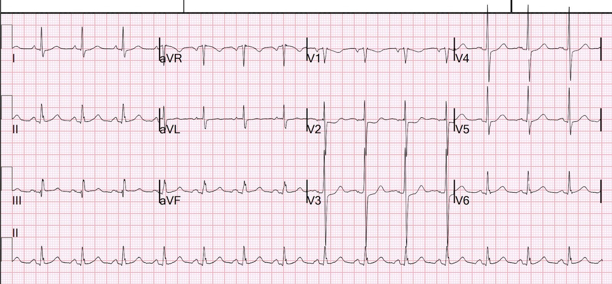
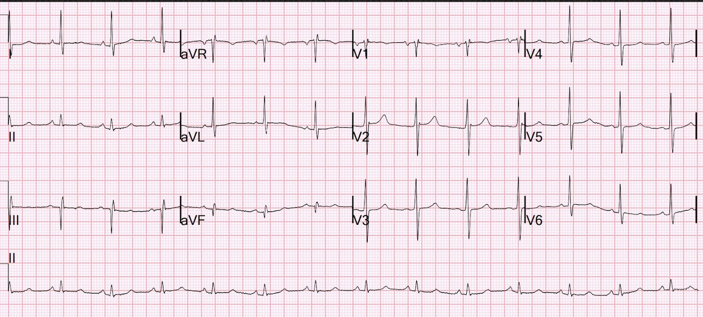
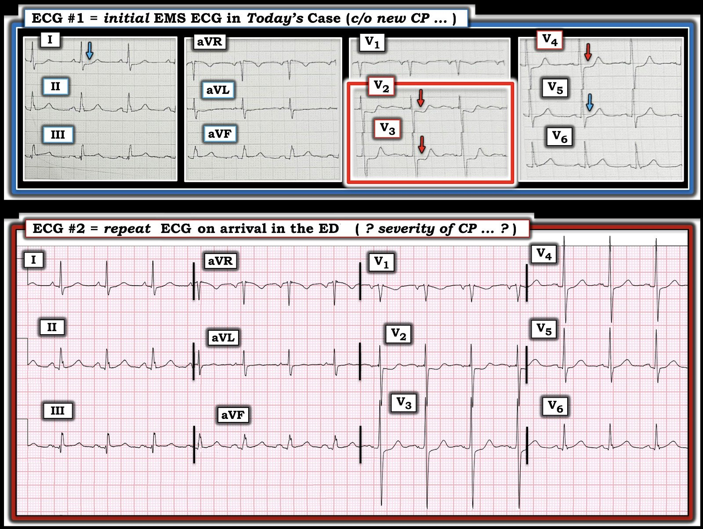

12/06/2025 — Bệnh nhân ngoài 60 tuổi có tiền sử bắc cầu chủ vành bị đau ngực cấp
Bản dịch tiếng Việt của bài "60-something with h/o Coronary Bypass has acute chest pain" – Dr. Smith’s ECG Blog. Giữ nguyên toàn bộ 6 hình ảnh của bản gốc.


Một bệnh nhân ngoài 60 tuổi có tiền sử phẫu thuật bắc cầu chủ vành (Coronary Bypass) gọi 911 vì đau ngực cấp.
Đây là điện tâm đồ trước viện đầu tiên:


Bạn nghĩ gì?
Có ST chênh lên rất ít ở các chuyển đạo dưới, điều này hoàn toàn có thể là bình thường. Tuy nhiên, aVL có ST chênh xuống (STD) rất ít, ủng hộ chẩn đoán nhồi máu cơ tim do tắc (OMI). Quan trọng hơn, ST chênh xuống ở V2-4 có giá trị chẩn đoán OMI thành sau. Có sóng T tối cấp ở V6, chuyển đạo phản ánh phần bên của thành sau, và đây là một dấu hiệu hỗ trợ thường gặp trong OMI thành sau.
Thuật toán của máy Zoll đã kết luận một cách ấn tượng: ***STEMI***
Một học viên cấp cứu ngoài viện có ứng dụng AI Queen of Hearts của PMCardio trên điện thoại, và đây là kết quả nó đưa ra:


Mới: Ứng dụng PMcardio for Individuals 3.0 nay đã có mô hình Queen of Hearts mới nhất và khả năng giải thích của AI (bản đồ nhiệt màu xanh lam)! Tải ngay cho iOS hoặc Android. (Dr. Smith là cổ đông của Powerful Medical.)
Khi đến viện, một điện tâm đồ tại khoa cấp cứu (ED) được ghi:


Vẫn có giá trị chẩn đoán
Khi bệnh nhân có bệnh mạch vành mạn tính nặng, những dấu hiệu trông có vẻ cấp tính đôi khi lại là mạn tính, vì vậy ở bệnh nhân có tiền sử CABG (phẫu thuật bắc cầu chủ vành) này, nên tìm một điện tâm đồ cũ nếu có thể.
Đây là điện tâm đồ cũ:


Điều này xác nhận rằng mọi dấu hiệu đều là mới.
Phòng thông tim (cath lab) đã được kích hoạt
Bác sĩ can thiệp không đồng ý với nhận định này, nhưng vẫn đồng ý chụp mạch vành.
Kết quả chụp mạch vành phức tạp vì đã làm CABG:
Bệnh mạch vành tắc nghẽn ba nhánh mức độ nặng, với tắc hoàn toàn mạn tính đoạn giữa LAD, tắc hoàn toàn đoạn giữa RCA, và tắc gần hoàn toàn mức độ nặng cùng bệnh lý nặng ở đoạn giữa và đoạn gần động mạch mũ trái, cũng như bệnh lý nặng ở chính nhánh bờ tù (OM). Đáng chú ý là LAD và động mạch mũ trái có 2 lỗ xuất phát riêng biệt, nằm rất gần nhau ở chỗ xuất phát của cả hai mạch, và bệnh lý nặng
ở cả hai mạch.
Cầu nối tĩnh mạch hiển tới RCA có đường kính lớn, với sự chênh lệch đáng kể về kích thước giữa ống ghép và mạch nhận (conduit 2 vessel mismatch), nhưng không có bệnh lý nặng trong cầu nối tĩnh mạch và miệng nối với đoạn xa RCA có vẻ ổn.
Cầu nối LIMA tới LAD còn thông; LIMA được nối vào đoạn giữa LAD, sau nhánh chéo D1 và D2 lớn của LAD.
Cầu nối tĩnh mạch hiển tới nhánh bờ tù có đường kính nhỏ, với bệnh lý nặng ở lỗ xuất phát và tắc hoàn toàn ở đoạn gần thân cầu nối. Đây nhiều khả năng là động mạch liên quan đến nhồi máu.
Đáng tiếc là vì lý do kỹ thuật, không thể đặt stent được.
Có nên dùng thuốc tiêu sợi huyết không?
Tôi cho rằng, nếu không có chống chỉ định, thì có. Tôi chưa từng gặp một ca nào mà động mạch không thể mở được vì lý do kỹ thuật và do đó đã dùng tiêu sợi huyết thay thế.
Troponin I đỉnh là 22.000 ng/L (điển hình cho một STEMI mức độ vừa)
Siêu âm tim chính thức
Kích thước buồng thất trái bình thường, độ dày thành tăng nhẹ và chức năng tâm thu giảm nhẹ; phân suất tống máu thất trái ước tính 45-50%.
Rối loạn vận động thành khu trú: giảm động vùng trước bên và dưới bên đoạn giữa.
Đây là thuật ngữ được dùng cho rối loạn vận động thành sau — điều này xác nhận OMI thành sau.
EF chỉ 9 tháng trước đó là 64%, vì vậy đã mất một lượng cơ tim đáng kể.
Những điểm cần học:
1. Nếu không thể mở động mạch vì lý do kỹ thuật, hãy cân nhắc dùng thuốc tiêu sợi huyết.
2. Trong bối cảnh đau ngực cấp, BẤT KỲ ST chênh xuống nào tối đa ở V1-V4 đều là OMI cấp cho đến khi chứng minh được điều ngược lại. Chúng tôi đã chứng minh điều này.
Ngoại lệ
Cần thận trọng (nghĩa là cẩn thận, không vội kết luận vì ST chênh xuống tối đa ở V1-V4 có thể KHÔNG phải do OMI) khi có rung nhĩ hoặc dấu hiệu sinh tồn bất thường:
1. Rung nhĩ
Ví dụ điển hình: 60-something: chest tightness, palpitations, and ST depression V1-V3 (Ngoài 60 tuổi: tức ngực, hồi hộp đánh trống ngực và ST chênh xuống V1-V3)
Các ví dụ khác:
Cardiac arrest, defibrillated, diffuse ST depression and ST Elevation in aVR. Why? (Ngừng tim, đã khử rung, ST chênh xuống lan tỏa và ST chênh lên ở aVR. Vì sao?)
Chest Pain and Cardiogenic Shock with Profound ST Depression & STE in aVR. Activate the Cath Lab? (Đau ngực và sốc tim kèm ST chênh xuống sâu & ST chênh lên ở aVR. Có kích hoạt phòng thông tim không?)
Atrial Fibrillation w Rapid Ventricular Response and ST Depression Maximal V1-V4: Not always subendocardial. (Rung nhĩ đáp ứng thất nhanh và ST chênh xuống tối đa ở V1-V4: không phải lúc nào cũng là dưới nội tâm mạc.)
Does this ST Depression Maximal in V3 Represent Posterior OMI? (ST chênh xuống tối đa ở V3 này có phải là OMI thành sau?)
Atrial Fibrillation with RVR and Inferoposterior ST elevation (Injury Pattern) (Rung nhĩ với đáp ứng thất nhanh và ST chênh lên dưới-sau (hình ảnh dòng tổn thương))
2. Sốc/Tụt huyết áp:
Hypotension, chest pain, and precordial ST depression maximal in V3. Is this OMI? (Tụt huyết áp, đau ngực và ST chênh xuống ở chuyển đạo trước tim tối đa ở V3. Đây có phải là OMI?)
3. Nhịp nhanh
Regular, steady, and fast at 170 (wide or narrow?), hypoxic, crackles in lungs, B-lines, unconscious (Đều, ổn định và nhanh 170 nhịp/phút (rộng hay hẹp?), thiếu oxy, ran nổ ở phổi, đường B, bất tỉnh)

===================================
BÌNH LUẬN CỦA TÔI, bởi KEN GRAUER, MD (12/6/2025):
===================================
Ca bệnh hôm nay là một người đàn ông ngoài 60 tuổi có bệnh mạch vành đã biết — đã gọi đội cấp cứu ngoài viện (EMS) vì CP mới khởi phát (Chest Pain – đau ngực).
- Để rõ ràng, trong Hình 1 — tôi đã trình bày lại 2 điện tâm đồ đầu tiên của ca này.
=================================
CÂU HỎI:
— Bạn có thể đưa ra chẩn đoán của ca hôm nay nhanh đến mức nào?
- Vượt ra ngoài phần cốt lõi: Điện tâm đồ ghi lại có thay đổi gì không?


TRẢ LỜI:
Mục đích bình luận của tôi trong ca hôm nay là nhấn mạnh rằng chẩn đoán OMI thành sau cấp cần được đưa ra nhanh đến mức nào từ điện tâm đồ #1.
- Biết tuổi của bệnh nhân này và tiền sử bệnh mạch vành đã biết — ngay lập tức xếp ông vào nhóm nguy cơ cao hơn đối với một biến cố mạch vành cấp.
- Với tiền sử này — không nên mất quá vài giây để chẩn đoán chắc chắn OMI thành sau cấp vì: i) Có ST chênh xuống tối đa ở các chuyển đạo V2,V3,V4 (mũi tên ĐỎ); và, ii) Hình dạng của ST chênh xuống ở 3 chuyển đạo này trông cấp tính (đoạn ST thẳng đuỗn, dạng “bậc thềm” (shelf-like) với phần cuối sóng T dương). Có “nghiệm pháp soi gương” (Mirror Test) dương tính (Xem Bình luận của tôi trong bài ngày 21 tháng Chín năm 2022, cùng nhiều bài khác, để biết thêm về nghiệm pháp “soi gương”).
Theo Dr. Smith — Có gợi ý ST chênh lên ở các chuyển đạo dưới trong điện tâm đồ #1, kèm đoạn ST dẹt bất thường ở chuyển đạo aVL. Tuy vậy, tự bản thân nó — điều này sẽ không có giá trị chẩn đoán vì các dấu hiệu ở chuyển đạo dưới này quá kín đáo — và vì đoạn ST gần như phẳng ở chuyển đạo aVL là không đặc hiệu, và không đủ thuyết phục là một thay đổi soi gương.
- Cũng có ST chênh xuống ở chuyển đạo I của điện tâm đồ #1. Trong phần lớn trường hợp nhồi máu thành dưới cấp — mức ST chênh xuống soi gương thường lớn hơn ở chuyển đạo aVL so với chuyển đạo I. Nhìn lại (tức là khi đã biết kết quả thông tim) — ST chênh xuống ở chuyển đạo I này nhiều khả năng phản ánh bệnh nhiều nhánh mạch vành nặng của bệnh nhân.
Còn điện tâm đồ ghi lại thì sao?
Như đã nói — chẩn đoán OMI thành sau cấp (và nhu cầu thông tim kịp thời để làm PCI) — cần được đưa ra ngay lập tức khi biết tiền sử và xem điện tâm đồ #1. Tuy vậy — tôi muốn bổ sung 2 điểm quan trọng liên quan đến điện tâm đồ #2:
- Điểm #1: Các dấu hiệu điện tâm đồ thấy trên bản ghi ban đầu của EMS đã cải thiện. Cụ thể: i) Mặc dù ST chênh xuống vẫn còn và tối đa ở các chuyển đạo V2,V3,V4 — mức độ chênh xuống và vẻ cấp tính của nó đã giảm trong điện tâm đồ #2 (đoạn ST ít có dạng “bậc thềm” hơn — với chiều cao giảm và phần cuối sóng T dương ít nhọn hơn ở các chuyển đạo này); ii) Không còn ST chênh xuống ở chuyển đạo V5; và, iii) ST chênh xuống ở chuyển đạo I đã giảm.
- Điểm #2: Không có thông tin về việc CP của bệnh nhân có giảm vào thời điểm ghi điện tâm đồ #2 hay không. Điều này có ý nghĩa — vì NẾU CP của bệnh nhân đã giảm cùng lúc với sự cải thiện của các dấu hiệu điện tâm đồ cấp, điều đó sẽ càng ủng hộ một biến cố tim cấp, đồng thời gợi ý đã có một mức độ tái tưới máu tự phát nào đó.